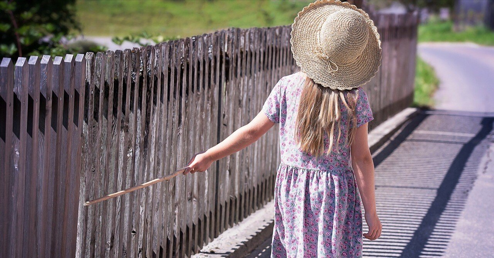

世間は華金だと騒いでいる街の雑踏に耳を塞ぎ帰宅した、ある金曜日。
最近は仕事が忙しいからか、心身ともにくたびれた状態で横になる。
時間に追われるとはそれだけやらねばいけないことが多いという証左だが、まさにそれが今の僕の状態だった。こなしきれない業務量を抱えながら分刻みで事務処理や会議が詰まっていて、トイレにすら満足に行けない状況がしばらく続き、正直参っていた。
ここ最近は休日も人と会ったり持病の通院などが立て続けに入っていたが、この週末は珍しく何の予定もない。そのことをスマートフォンのスケジュールアプリで確認し安心する。
昔からの友や家族と時間を過ごすことも変わらず大事なものだが、やはりひとりで心身を整える時間は僕の場合どうしても必要不可欠なのだ。
小休憩し、遅めの夕食にと用意した総菜を温めている間テレビをつけると、NHKで夜ドラが放送されている。どうやら再放送のもののよう。
ドラマは途中からだと楽しめないだろうなと思い、民放のバラエティにでも切り替えようとするが、ついある場面に見入ってしまった。
それは登場人物の女性がテントを設営しているシーン。ここ数年で自らもかなりのめり込んでいるせいか、キャンパーを見ると自然と動きが止まってしまうのである。
結局、総菜と缶ビールをお供にエンディングまで視聴していた。
ももさんと7人のパパゲーノ。それは2年前に放送されていた単発ドラマだった。録画機能や動画配信サイトで事前に好きな番組をリサーチ・選択し視聴できるこのご時世で、偶然出会った番組に心を打たれる経験はとても貴重だ。この作品もまさに“一期一会”という言葉がしっくりくる。
パパゲーノとは、死にたい気持ちを抱えながらも、その人なりの理由や考え方で生きることを選択している人たちのこと。
ちなみに名称の由来は、モーツァルトのオペラ『魔笛』の登場人物であるパパゲーノが、王子にお供する過酷な試練の過程で自殺を決意するものの、童子たちの助言に従って魔法の鈴を鳴らしたところ、自らに瓜二つのパパゲーナが現れたため自殺を思い留まった、という話が由来の模様。
『ももさんと～』は、25歳の会社員であるももが主人公。
友達も恋人もいるけれど、常に心が低空飛行なももは月曜日の朝を迎えることに耐えきれず、会社を休んでSNSで繋がった同じ気持ちを抱える人＝パパゲーノを訪ねる旅に出る。そして、彼ら彼女らと出会い、死ぬ以外の選択肢を実際に知っていくというストーリーだ。
決して孤独ではなく仕事もあり、むしろ日々の環境には恵まれているはずなのに、ある時何もかもを放りだしたくなる。
そんな主人公の気持ちがあまりにも今の自分とリンクし一気にそのドラマに興味が湧いたため、後日NHKプラスで最初から視聴。無事、僕の数少ない大切な作品リストに追加されることになった。
先ほど「ももには友達も恋人もいるが」と書いたが、その人たちがほどよく無神経なのである。それが一概に悪いことだとは思わないが、誰かにもたれかかりたい時に周囲がそうした人たちばかりだと気が滅入るのもよくわかる。
結局、ももは火曜日には仕事を辞めてしまうのだが、肩の荷が降り晴れ晴れとしたその表情が、同じくももと似た理由で退職した過去の自分と重なってしまい、つい懐かしんでしまった。つらい経験でも人は懐かしむことができるものなんだなと小さく驚きながら。
そんな風にして、最後まで昔を述懐しながら観れた本作。
不思議と仕事の疲れが癒された感覚に気づく。それぞれの生き方に寄り添ってくれる作品は、凝り固まった心をほぐして麗らかな気分にしてくれる。そして、再び前を向く力になってくれもするのだ。
作中のテーマのひとつに「死」というものはあるけれど、終始流れる穏やかな空気と、今の生活がすべてじゃない、この世界には違う生き方も山ほど転がっているのだと優しく教えてくれるような作品だった。
タイトルにもある通り、ももはSNSで出会った7人のパパゲーノと会い話を聞く。
もちろんどれも、パパゲーノになったという結果は同じでもその過程は違うのだから、自分が抱えているそうした気持ちを即座に取り払ってくれる人は最後まで現れない。しかし、ももは様々な人の話を聞くうちに、緩やかではあるが将来に希望を見出していく。終盤の彼女の表情には、それが色濃く滲んでいた。
自らに照らし合わせると、パパゲーノであった時期は確かにあったが、今はだいぶ様子が異なって、楽しいことのために仕事を頑張っている、といった雰囲気が僕にはある。
あの頃にはなかった希望が、今は周りにいくつかある。それは決して大きくないが、心の要所を押さえてくれていて、だからこそ休息しながらも走り続けることができているのだとも思う。
一見元気そうな人が、突然この世界からいなくなってしまう。そんな知らせは巷を騒がせるようなニュースでも、ごく身近な周りでもあった。
周囲にとって、健康な人が寿命や体の不調以外で消えてしまう選択をすることほど悲しい現実はない。そうした結果になって初めてその人が抱えていた苦悩や重圧を知っても、彼ら彼女らは帰ってこない。やるせなさばかりが募っていく。
本当の気持ちを言ったら心配されてしまう、自分はこの世界で生きるには向いていない。
同じ気持ちを抱えたことがあるからこそ、僕は仕事や人間関係で少しでも息をしやすい環境に身を置くことにした。そのためだったら僕は何でもする覚悟だった。現に、恥なんて気にせずにみっともなく逃げ出したこともたびたびあったくらいなものだ。
だから、人生一度こうと決めたら変わってはいけないというものではない。
日々アップデートを試みながら、小さな希望を増やしていく。その旅路こそ、生きることなのだと。今は勝手にそう思い込んでいる。
人それぞれ希望の探し方は違う。でも、それが見つかるまでのつらさに目を瞑ったり、ましてや隠そうとはしなくていいはず。似た境遇の人や信頼できる人に話したり、あるいは自らで考え尽くして全く新しい道に進むのもいい。
相変わらず嫌なことがたくさんある毎日だけど、生きていればいいこともある。散々遠回りもしてきた人生だけれど、今の僕はそう思う。そして、この先の未来で何が待っているのかも少し楽しみにしながら、これからも生きてみたい。それが僕の見つけた、小さな希望でもあるからだ。
https://www.nhk.or.jp/heart-net/papageno/